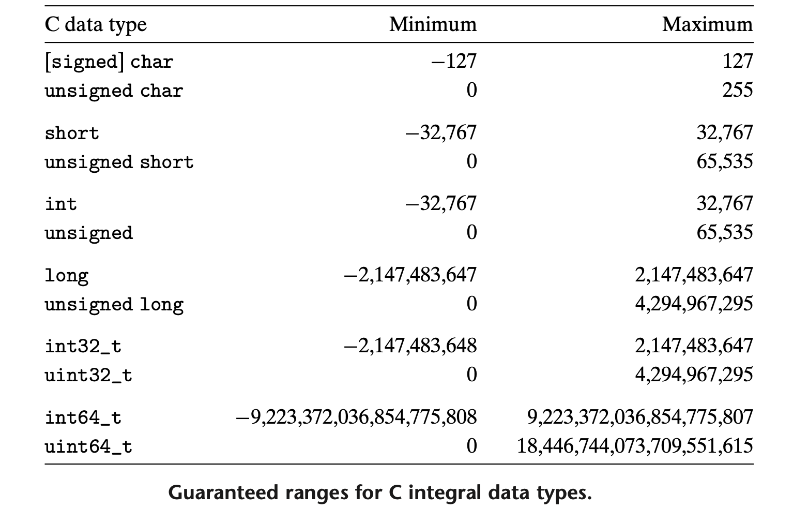

变量与数据类型
数据类型¶
C 语言只提供 4 种基本数据类型：char、int、float、double，不过前面可能会有 unsigned、short、long 进行修饰。
C 语言标准只定义了每种数据类型必须至少能够表示的范围：

值得注意的是，C 语言标准中规定了：
short、int类型至少占 2 B，long至少占 4Bshort的长度 \(\le\)int的长度 \(\le\)long的长度
而在具体实现时数据类型所能表示的范围与编译方式、机器等有关。例如 long 在 32 位程序中为 4 B，而在 64 位程序中为 8 B。
为了增强可移植性，ISO C90 标准引入了 int32_t、uint32_t 等类型，它们的大小是固定的，不随编译器和机器设置而变化。

类型转换¶
当一个运算符的几个操作数类型不同时，就需要通过一些规则把它们转换为某种共同的类型。“先转换，后运算”。
自动转换（隐式）¶
-
相同长度下，若运算中同时有无符号整数和带符号整数，则按无符号整数进行运算。
-
若长度不一致，则向数据长度增加的方向转化，以保证不丢失信息。
-
所有的浮点运算都是以 double 进行的。即使仅含 float 变量的表达式，也要先自动转换成 double 型再作运算。
char 和 short 型参与运算时，会先自动转换成 int 型。
-
在赋值运算中，数据类型转换发生在等号右侧表达式已经计算完毕的情况下，此时无论 “
=” 右侧（计算结果）数据类型是什么，都要将右值的数据类型变为左值的数据类型（可能会发生数据截断）。
强制转换（显式）¶
- 若字长不变，则仅改变解释位串的方式。（有符号数与无符号数之间的转换）
- 若字长缩短，则直接舍弃高位。
- 若字长增加，则无符号数进行零扩展，有符号数进行符号扩展。
| 强制类型转换 | 注意 |
|---|---|
int → float |
不会发生溢出，但可能损失精度 |
double/float → int |
可能发生溢出和精度损失 |
double → float |
可能发生溢出和精度损失 |
int/float → double |
不会发生溢出和精度损失 |
注意
强制类型转换运算符的优先级高于算术运算符，因此变量先进行类型转换，再参与运算。
变量¶
变量名¶
变量名是由字母（大小写敏感）和数字组成的字符串，其中第一个字符必须为字母（包括 ‘_’）。
编程风格推荐
- 系统程序中的变量通常以
_开头，因此编程时最好不要以_开头给变量命名。 - 变量名使用小写字母，符号常量名全部使用大写字母。
声明与初始化¶
所有变量都必须先声明后使用，在声明的同时可以对变量进行初始化。默认情况下，外部变量、静态变量将被初始化为 \(0\)，而未经显式初始化的局部变量的值为未定义值。
任何变量的声明都可以用 const 限定，指明变量的值不能被修改。对数组而言，const 指定的数组的所有元素都不能被修改。
作用域¶
C 程序可以看成由一系列的外部对象（函数或变量）构成，通过同一个名字对外部对象的所有引用实际上都是引用同一个对象。
由于 C 语言不允许在函数内部定义其它函数， 因此函数本身总是“外部”的；而变量可以分为“内部”（局部变量）和“外部”（全局变量），外部变量定义在函数之外，可以在许多函数中使用。
| 局部变量 | 全局变量 | |
|---|---|---|
| 作用域 | 从声明处到函数结尾 | 从声明处到源文件结尾 |
| 生存期 | 函数被调用——函数退出 | 程序运行过程中永久存在 |
如果要在外部变量的定义之前使用该变量，或外部变量的定义与使用不在同一个源文件中，则必须在相应的变量声明中使用关键字 extern 。一个外部变量只能在某个文件中定义一次，其它文件可以通过 extern 声明来访问它。
变量的声明与定义
“声明”与“定义”是有区别的：“声明”用于说明变量的属性（变量的类型等），而“定义”除此以外还将引起存储空间的分配。例如：
注意到，外部变量的定义中必须指定数组的长度，而 extern 声明则可以不指定。外部变量的初始化只能出现在其定义中。
若想使变量或函数仅在该源文件内部使用（对外部隐藏），可用 static 将该其声明为静态变量或函数。
static 也可用于声明局部变量，此时不管其所在函数是否被调用，该变量将在程序执行期间一直存在，而不是随着所在函数的被调用和退出而存在和消失。也就是说，static 类型的局部变量是一种只能在某个特定函数中使用但一直占据存储空间的变量，只会被初始化一次。
常量（字面量）¶
对于一个常量，可以通过添加后缀的方式来显式指明其类型，例如：
u或U——unsignedL或l——long或long doubleul或UL——unsigned longf或F——float- ...
例子
0XFUL 是一个 unsigned long int 类型的常量，值为十进制 15。
若没有显式指明类型，
- 对于整型常量，C99 标准规定按
int32_t、int64_t、uint64_t的顺序确定类型； - 对于浮点型常量（含
.或e），按double、long double的顺序确定类型。
字符常量¶
一个字符常量就是一个整数 —— 对应字符的 ASCII 码，不过书写时可以直接用 'x' 的方式显式指明对应的字符，提高程序易读性。
注意：
- 一些特殊字符需要进行转义。
- 也可以用八进制或十六进制指明字符，例如 ASCII 码 11 对应的字符可以写为
'\013'或'\xb'。
字符串常量¶
字符串字面量就是 C 风格字符串，在代码中使用字符串字面量时，编译器将负责在它后面添加 '\0'，作为字符串的结束符。
枚举常量¶
编译时对枚举元素按 常量 处理，每个枚举元素都是一个整数默认为0,1,2,3,...，也可以人为指定枚举元素的数值：sat = 1 —— 错误！
在给枚举变量赋值时，不能直接赋整数，因为二者不是同一类型，不过可以进行类型转换后再赋值，如：